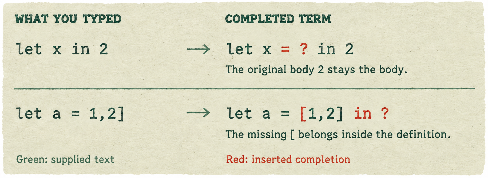
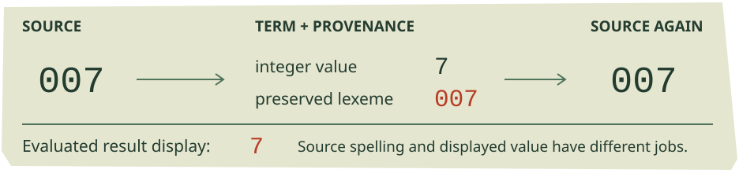
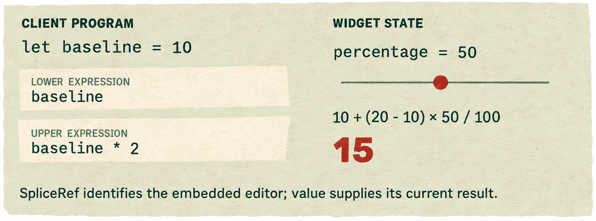
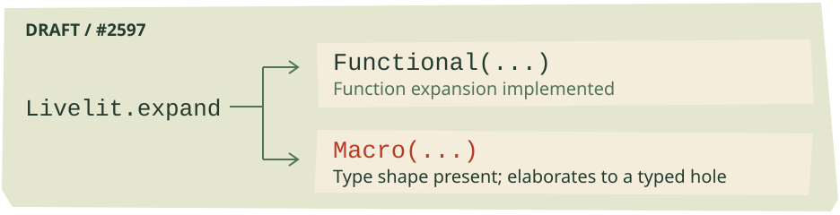
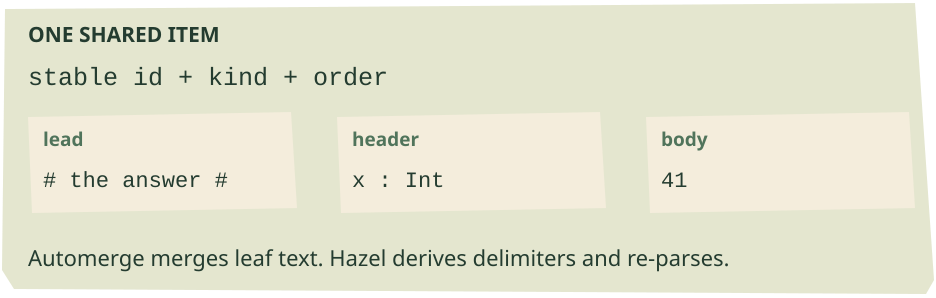
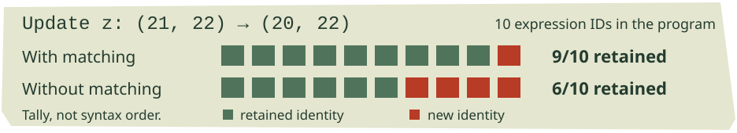
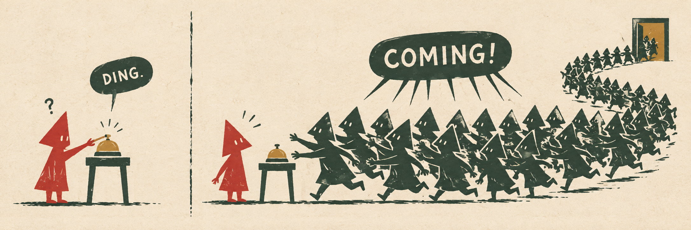
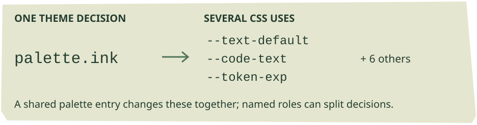
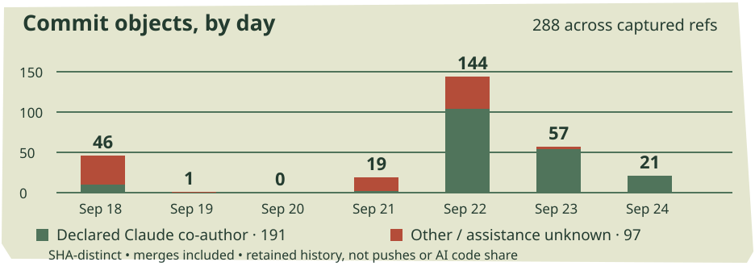

Mind the gaps.
Canonical completion reaches dev. Livelits make room for editable code. A collaborative branch learns what must stay the same when two people change a program.
In this issue
MERGED INTO DEV / SEPTEMBER 22
The punctuation has an address



Two examples pinned in the merged completion tests. Red marks the synthesized pieces; the completed term is distinct from the source the programmer typed.
Andrew’s canonical completion work reached dev on September 22 together with the tile datatype revision. The two PR records share one integration commit: #2374 was stacked on tile-datatype, and #2389 targeted dev. This is the week that a long-running change to ordinary editing became shared development behavior. Its reach includes where Hazel puts missing punctuation, how indentation behaves while typing, and how unfinished code survives a trip through the term representation. #2374, #2389
Consider let x in 2. The new engine completes it as let x = ? in 2: the missing definition receives a hole, while 2 remains the body. Or start with let a = 1,2]. The missing opening bracket belongs inside the definition, producing let a = [1,2] in ?, rather than wrapping the entire binding. These are concrete cases pinned in the merged completion tests. Missing middle delimiters, openers and closers require different placement rules; simply putting everything at the caret cannot express the distinction. Merged examples
The completion is computed independently of the caret. It first uses evidence already in the code: a partially deleted keyword, a surviving arrow prefix, or the structural junction left by a deletion. Where that evidence is absent, indentation helps decide which following content belongs to the unfinished form. A following line at the same or a shallower indentation ends its partition; deeper content can remain inside. Moving the caret need not change that interpretation. Completion engine
The quiver makes those decisions visible beside their insertion points. Cmd/Ctrl-click accepts a displayed obligation, while Tab still works at the caret. The nut menu offers Quiver, Flag, or None: the flag raises the caret’s preview while leaving other previews beside their insertion points. Accepting a completion materializes the engine’s suggestion into the buffer; the display and the accepted structure use the same machinery. Display controls, materialization
MERGED INTO DEV / SOURCE, FORMAT AND PROVENANCE
Keep the unfinished version


Source spelling and result display have different jobs. Provenance allows a completed term to return to the unfinished source that produced it.
Indentation is now ordinary whitespace owned by the user. Enter supplies it for the new line; subsequent edits no longer automatically reindent everything below. This reduces indentation thrashing and gives completion visible evidence of grouping. #2374
The default Cmd/Ctrl+S setting, Spaces, reindents and normalizes within-line spacing while preserving linebreaks and comments. Indent only reindents; Breaks permits a full pretty print; None disables formatting on that shortcut. Cmd/Ctrl+Shift+S always pretty-prints. Auto Re-indent, on by default and labeled experimental, separately reindents affected contents when delimiters complete. Merged settings and defaults, menu
Matt’s module-body PR showed each binding deeper than the last. Cyrus closed it unmerged on September 22 because #2374 addressed the layout problem: the pretty printer now handles module-item bindings directly. #2579 closing comment, module-item rule
Canonical completion supplies statics with structure while provenance records which delimiters were actually typed, including prefixes. Printing can strip the synthesized pieces again. Lexical annotations preserve 007, 1e3, hole variants and quoted labels through source round trips; result display still prints the value of 007 as 7. The merged tests pin both responsibilities. Annotation contract, round-trip and display tests
Tiles also now store form and sort, deriving their label and mold. Precedence changes no longer require migrating a stored copy on every serialized tile. The PR reports roughly 40% smaller serialized syntax, a scoped size claim rather than an application-speed measurement. Together, these changes support term-based transformations that retain unfinished source and deliberate layout. Tile representation, #2389
The action fuzzer covers character insertion, movement and backspace, excluding selection, clipboard and projector interactions. Its comparison allows differences in grout placement and rederived mold sorts. On September 23, Thomas reported incorrect completion placement; #2598 remained open at cutoff. Deterministic placement is inspectable, but can still misread intent. Fuzzer domain, #2598
DRAFT BRANCHES / USER-DEFINED LIVELITS
Code inside the slider



Source-derived example from the SpliceRef draft: the client owns the bound expressions; the widget updates the percentage. At the initial midpoint, the value is 15.
Last week, a livelit acquired a checked interface. This week, Matt's splice branches let its view contain an editable part of the surrounding program. The smallest example is a slider whose left bound reads baseline and whose right bound reads baseline * 2. Those expressions sit inside the widget as editors. With baseline = 10 and the slider halfway across, the result is 15. The expressions still resolve in the client's scope. #2595
A livelit model could already contain an ordinary expression. Splices give the widget somewhere to display and edit it beside the controls using its value. The author places the region; the client owns its code. Dragging the handle currently updates the percentage while preserving the bound expressions.
The example calls between with pct=50, lo=(baseline) and hi=(baseline * 2) inside a livelit. Parentheses mark the fields that become splices. They delimit the whole editable region: hi=(slider) * 2 + 10 leaves the arithmetic outside the marker, whereas hi=(slider * 2 + 10) includes it. This is an interim convention, with consequences for persistence, rather than a finished surface syntax. Splice example
The next increment, #2596, gives the model real handles. Its low bound has type (ref=SpliceRef, value=Int): m.lo.ref identifies the editor, while m.lo.value supplies the number used in the calculation. The view now says Html.splice(m.lo.ref) instead of asking for splice number zero. Underneath, the model argument is rewritten before analysis to pair each splice's identity with its expression; the expression continues to be typed and evaluated in the surrounding scope.
The deck also puts one slider inside another’s bound. That exposed a bug a flat example would miss: the inner slider moved, but its committed value never reached the outer one. The subeditor had rejected the update because the caret was outside its splice. That restriction remains appropriate for keystrokes. The repair exempts projector updates that explicitly name their target, so dragging a nested control does not require first placing the text caret inside it. Nested-action correction
DRAFT / LIVELITS-SPLICEREFS-FULL
One signature; work still ahead


The latest draft represents expansion kind with a value. A Macro alternative in the type does not yet provide working macro expansion.
The SpliceRef increment also tightened the widget’s geometry. Its declared width now covers its own controls; the editor adds the width required by the embedded code. Counting both twice had reserved a large blank area. Splices can also increase the widget's height, and horizontal clipping no longer requires clipping the space below a code row where an error arm may need to draw. These are functional details of putting an editor inside a view, rather than merely replacing a textbox with code.
A further draft, #2597, changes the interface again. The intermediate branches distinguished LivelitFun and LivelitMac; this one returns to a single Livelit signature. Its expand member is a sum, inhabited by Functional(...) or Macro(...). Ordinary functional definitions therefore wrap their expansion function, as in let expand = Functional(fun m : Model -> at(m)). The kind is now expressed by a value rather than by selecting a different signature.
The definition check also moves into ordinary module analysis. Missing members receive module diagnostics, and a mismatched member gets a type error at the offending expression. Analyzing against the realized signature supplies the Functional constructor too, removing a temporary repeated type declaration from the examples. A later test correction records another consequence: a functional expansion rejected at its definition need not generate a second redundant problem at every use. Definition analysis, problem-count correction
The three drafts are stages of an unfinished interface. The latest still lacks operations to create, evaluate or set splices through commands; the number of editable regions remains fixed by the source. An unreducible bound becomes a hole rather than giving the widget an explicit indeterminate result to handle. Exp remains uninhabited, and the Macro path elaborates to a typed hole. Durable save/load and large livelit redraw costs remain unresolved. The closed #2580 was replaced after a branch rename, not merged or abandoned. For now, the concrete advance is the editable region, its handle, and the plumbing needed to let nested controls act on it.
DRAFT / PATCHWORK-MODULAR
A shared program, one leaf at a time


A source-derived view of one shared item. Its text leaves are merged; definition identity and ordering belong to the shared structure.
Cyrus’s new collaborative Hazel experiment puts an Automerge replica inside Hazel and packages the editor as a Patchwork tool. Its shared document divides a program into top-level definitions, statements and a final expression. Each item has an identity and an order; its editable text is divided into lead, header and body. Automerge merges that text, and Hazel parses it back into editable structure. The draft replaces the earlier flat-piece synchronization design for new documents. The draft targets modular-editors-dev-merge. #2599
The split keeps a definition’s delimiters structural while letting two people edit its contents. A half-written let between definitions lives in the following item’s lead until its in completes the item. Each text leaf also remembers which document version the editor has seen. A local edit is applied against that version with Automerge’s changeAt, rather than treating a lagging editor’s text as the latest shared state. Tests cover simultaneous edits, stale echoes of inserted items, and typing while another leaf changes. Session implementation and tests
Thursday’s follow-through is especially revealing. At first, whitespace around = and in was trimmed away, so two peers could agree on the code and disagree on its layout. Leaves now retain their edge whitespace. Holes require another agreement: because they are derived rather than transmitted as text, the author’s editor can place them differently from a peer that reparses the same string. The final commit normalizes these cases and includes a held-back space in the transmitted text, preventing l et from arriving as let. Whitespace, hole placement
Another late change replaces whole-program reconstruction during remote structural edits with rearrangement of the live item regions. Untouched pieces retain their identities, and the existing editor retains its caches. This supersedes the PR description’s warning that every remote structural edit starts statics cold. Collaboration-aware undo remains unfinished: snapshot undo can revert somebody else’s work. Projector state is not shared, probes remain per-user, and the PR still asks for more testing through Patchwork’s sync server. Live rearrangement
OPEN PR / IDENTITY · DRAFT / INTEGRATION
Keep the identity of 22


Expression IDs retained across the entire test program when one tuple component changes. These are inspected regression-test assertions, not a speed benchmark.
An agent can change (21, 22) to (20, 22) by replacing the whole expression. Reparsing the replacement currently gives every piece a fresh identity—even the untouched 22. Alexander’s structural-diff PR attempts to preserve identities through those text-based replacement edits, so identity-keyed editor machinery has something it can reuse. #2593
The matcher first finds identical subtrees in order, then descends through compatible containers whose contents changed. That second step matters: without it, the changed tuple root blocks a search for the unchanged literal inside. In the branch’s end-to-end test, updating definition z from (21, 22) to (20, 22) preserves nine of the program’s ten expression IDs, versus six without matching. The program text is asserted to be identical under both policies. Regression test
Every candidate transplant is checked for unchanged structure, unique IDs, and IDs drawn only from the fresh parse or the replaced region. Failure falls back to the fresh parse. Those checks protect more than cache hit rates: the PR describes a separate audit in which synthetic identity assignments produced stale probe attribution, although that audit did not reproduce the problem through real editor actions. Matching across new nesting levels remains limited; wrapping x + 1 inside (x + 1) * 2 preserves only two of ten pieces. Ordinary cached paste takes a different path and is untouched.
The collaborative branch also tries to retain identity while text changes, through a separate implementation. Patchwork does not call this matcher.
An integration held for review. Cyrus’s review-only merge brings dev’s canonical completion and tile API into modular editors. The PR reports 4,629 passing tests, but also a regression in its mega-2k whole-program editing benchmark: typing an incomplete let q = 1 between items rises from 155 to 254 milliseconds per key across update, statics and calculate. Stacked cells were not benchmarked. #2600
The diagnosis points to completion traversing the whole program and, when a tile is incomplete, rebuilding pieces that the incremental parser recognizes as unchanged. The proposed repair completes affected items while preserving the rest. A separate whole-master completion adds a reported 80–100 milliseconds per changed frame. These are branch-specific measurements. The merge was withdrawn from modular-editors; the draft preserves it for review.
OPEN PRS AND DRAFTS / SMALL REPAIRS
One press should be enough


Fiction department: the bell rings once, but every old attendant answers. Inspired by the accumulated hotkey handlers in #2587.
One key, one command. Last week’s Frame Timing panel exposed Introduce dispatching dozens of times per keystroke. Each command-palette refresh registered another hotkey handler, leaving the old ones attached. Matt Keenan’s fix remembers its bindings and removes those exact handlers before installing replacements. Unbinding by key alone would also break palette navigation. The PR reports one dispatch after both 11 and 30 renders. Finding the selected hole still costs time; the change stops paying repeatedly for one press. #2587
One error, one row. On dev, y produces one Problems row; (((y))) produces four. Parentheses inherit error marks for highlighting, and the sidebar reports each wrapper as another problem. Matthew’s #2592 separates those jobs: keep the code’s error decoration and collapse the inherited marks into one row. If a projector hides the marked term, the row points at the visible projector instead, making it clickable. The draft is waiting on an ordering decision with the separate error-cascade work; inherited copies and errors newly generated by enclosing forms are different mechanisms.
A shortcut overtaken by a landing. Alexander’s open patch proposed skipping a whole-program caret walk when the local backpack was empty: nothing could be inserted. Its report compared 2,891 real zipper states without changed output segments. Andrew approved the reasoning but noted that canonical completion removes the system. That larger change landed this week. The still-open patch documents the old path; its speedup does not apply to the new one. #2589, review
MERGED INTO CONFIGURATION / SEPTEMBER 22
Name the decision, then the color


One palette choice supplies several component properties. Splitting an independently adjustable role changes both the type and the mapping.
Matthew’s color-vocabulary work merged on September 22 into configuration, the branch behind the still-open configuration-slide PR. It turns a theme from a list of CSS implementation names into a typed Hazel value. Someone adjusting a theme now encounters decisions such as cursor pattern color and hole warning edges, rather than having to recognize names like shard-caret-tpat. The destination matters: this is a feature-branch landing, not the theme editor becoming available on dev. #2481, #1591
The theme program produces a ColorScheme, assembled from named palette and role types. A mapping then expands those fields into the CSS properties consumed by components. The split is about reuse: one palette color may serve several jobs, while a role names a particular UI decision. For example, palette.ink feeds nine properties, including ordinary text, code text and expression tokens. Those nine change together. Making one independently adjustable requires changing the type and mapping; it cannot be done solely by editing the slide. Merged mapping
That boundary makes the tradeoff visible. A field for every CSS property would give finer control but a much larger theme to read. The current shape keeps shared palette choices and groups roles by the UI area they affect. Each intermediate record can be checked against its own named type, so a mistake can be reported near the record that contains it, rather than as one enormous mismatch at the end of the program. The contract fixes the shape, not the algorithm: a theme author may derive colors or write literal ones. Theme contract
The work also removes a redundant alias stylesheet and gives generated defaults their own file. Those defaults cover the first frame and a theme that fails to evaluate; cached settings can be replayed before paint. Dark mode and high contrast are independent flags, producing four combinations. Repairs include native scrollbar appearance and the contrast of table rows and headers. A golden file records every property in every scheme, but there is still no complete guard against a future stylesheet introducing a new hardcoded color. The scheme is editable; keeping that promise as components grow remains a maintenance task. Dataflow and ownership
SEPTEMBER 18–24 / A BRANCH CENSUS
The week in numbers


SHA-distinct commit objects by UTC committer date. Green marks declared Claude co-authors; the remaining segment includes assistance that was not declared.
Daily counts as a table
| Date | All | Declared Claude co-author |
|---|---|---|
| 2026-09-18 | 46 | 10 |
| 2026-09-19 | 1 | 0 |
| 2026-09-20 | 0 | 0 |
| 2026-09-21 | 19 | 2 |
| 2026-09-22 | 144 | 104 |
| 2026-09-23 | 57 | 54 |
| 2026-09-24 | 21 | 21 |
The window contains four merged PR records: two targeting dev and two targeting feature branches. Canonical completion’s #2374 targeted tile-datatype; #2389 targeted dev, and both share the September 22 integration commit. Completion is on dev. The records describe its route, not four independent launches. The other landings were the dependency update and color work in configuration.
There were 11 newly opened PRs, six marked draft at retrieval. Across 709 captured remote branch tips, the census finds 288 distinct commit objects with committer dates in September 18–24 UTC: 202 non-merge commits and 86 merges. Sixty-seven captured tips have dates in the window. Recent rebases across several stacks help explain why that is not a count of independent projects or pushes.
191 commits carry a Claude/Anthropic co-author declaration; zero carry the OpenAI/Codex/ChatGPT declarations recognized by this census. Separately, 123 contain a cryptographic signature header. The groups can overlap. A declaration credits assistance, and a signature is a different property; neither measures the fraction of code written by an agent. Missing declarations leave assistance unknown.
Tuesday, September 22 accounts for 144 retained commit objects, half the week’s total. The same census found 504 in Issue 002, but the lower total says little about the consequence of this week’s editor landing. The branch set is sampled at retrieval, and history can be rebased or cherry-picked. The chart is a view of that retained history, not a productivity score.
Reporting window: September 18–24, 2026 UTC; sources retrieved September 25. Cutoff dev: 6a816c4b29. PR and issue flows use saved timestamps; the open-issue count is a retrieval-time stock. Article links lead to the relevant discussions and immutable source examples.
AI editor: Astra. Reporting audits: Astra agents covering completion, livelits, and collaborative editing. Cover, comic and light stamp treatments: ImageGen. Technical plates are source-derived explanations, not screenshots. The exact-figure PDF and web switches retain the vector originals.